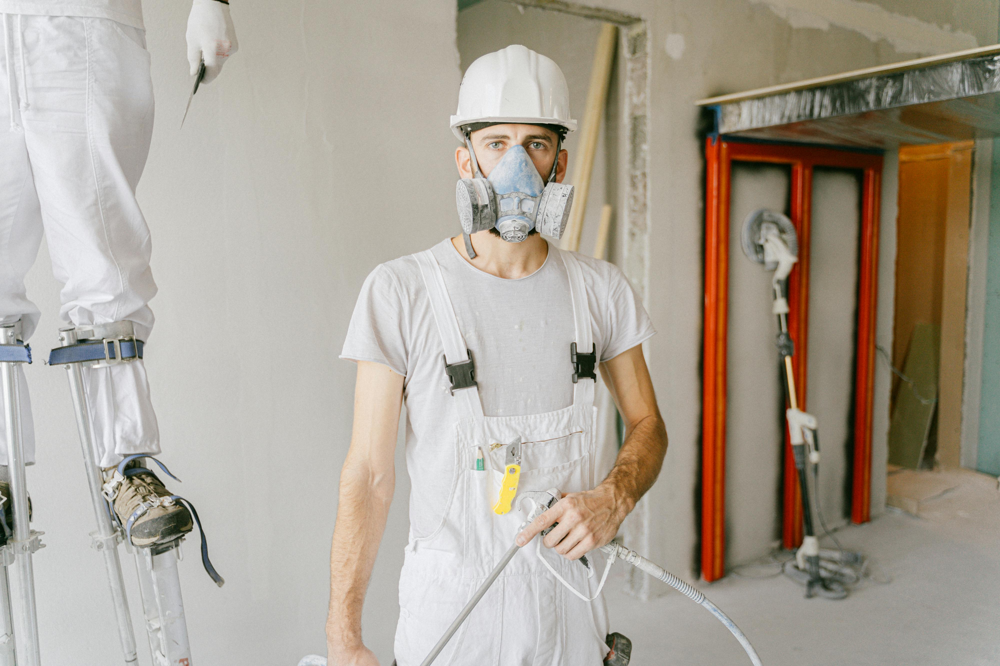

Van het eerste gesprek tot de laatste kwaststreek — u weet altijd waar u aan toe bent. Zo werken wij al meer dan 25 jaar.
We komen bij u langs en luisteren. Wat heeft u in gedachten? Welke stijl spreekt u aan? Welke kleuren passen bij uw interieur? In een ontspannen gesprek brengen we alles in kaart — geheel vrijblijvend.
Binnen enkele dagen ontvangt u een gedetailleerde offerte. Elk onderdeel staat erin beschreven — materialen, uren, kosten. Geen verborgen kosten, geen verrassingen achteraf. U weet precies wat u krijgt.
Samen prikken we een startdatum die past bij uw agenda. We plannen het werk efficiënt in, zodat u zo min mogelijk overlast ervaart. Bij grotere projecten ontvangt u een weekplanning vooraf.
Ons team gaat aan de slag. Met de beste materialen, professioneel gereedschap en jarenlange ervaring. We werken netjes, beschermen uw vloeren en meubels, en laten de ruimte elke dag opgeruimd achter.
We lopen het resultaat samen met u na. Elk detail wordt gecontroleerd. Pas als u volledig tevreden bent, is het project afgerond. En daarna? Garantie op al het geleverde werk.
We komen wanneer we zeggen dat we komen. En we leveren op wanneer we zeggen dat het klaar is. Geen excuses, geen uitstel.
Uw woning is geen bouwplaats. We beschermen uw vloeren, meubels en eigendommen. En aan het einde van elke dag ruimen we alles netjes op.
Geen vakjargon, geen vage antwoorden. We leggen alles helder uit en houden u op de hoogte van de voortgang — altijd bereikbaar, altijd transparant.
Het verschil tussen goed en uitzonderlijk zit in de details. Strakke randen, perfecte overgangen, geen druppels of oneffenheden. Wij zien het als u het niet ziet.
De kwaliteit van schilderwerk begint bij de materialen. Daarom werken wij uitsluitend met A-merk verven en lakken van gerenommeerde fabrikanten.
Hoogwaardige latex-, acryl- en alkydverven met uitstekende dekking en duurzaamheid.
UV-bestendige en krasvaste lakken die jarenlang hun glans behouden.
De juiste primer voor elke ondergrond — de basis van een perfect eindresultaat.
Waar mogelijk kiezen we voor watergedragen en milieuvriendelijke producten.
Dat hangt af van de planning en het seizoen. In de meeste gevallen kunnen we binnen 2 tot 4 weken starten na akkoord op de offerte. Bij urgente situaties proberen we eerder in te plannen.
Nee, wij nemen dat graag voor u over. We verplaatsen meubels, dekken alles zorgvuldig af en zetten na afloop alles weer terug op zijn plek.
Wij werken uitsluitend met A-merk verven zoals Sikkens, Sigma en Wijzonol. Indien u een voorkeur heeft voor een specifiek merk, stemmen we dat graag op af.
Ja. Op al ons schilderwerk geven wij garantie. De exacte termijn hangt af van het type werk en de gebruikte materialen. Dit bespreken we altijd vooraf.
Absoluut. We werken kamer per kamer, zodat u gewoon thuis kunt blijven. We houden de overlast tot een minimum en zorgen voor goede ventilatie.
Vraag vandaag nog een vrijblijvende offerte aan. Wij nemen binnen 24 uur contact met u op.